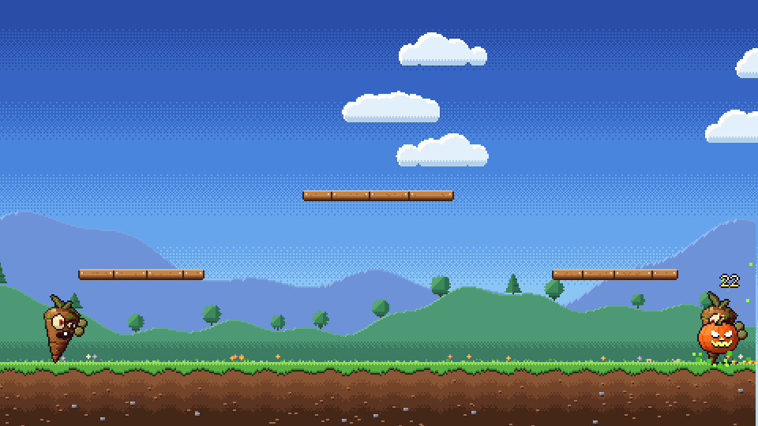
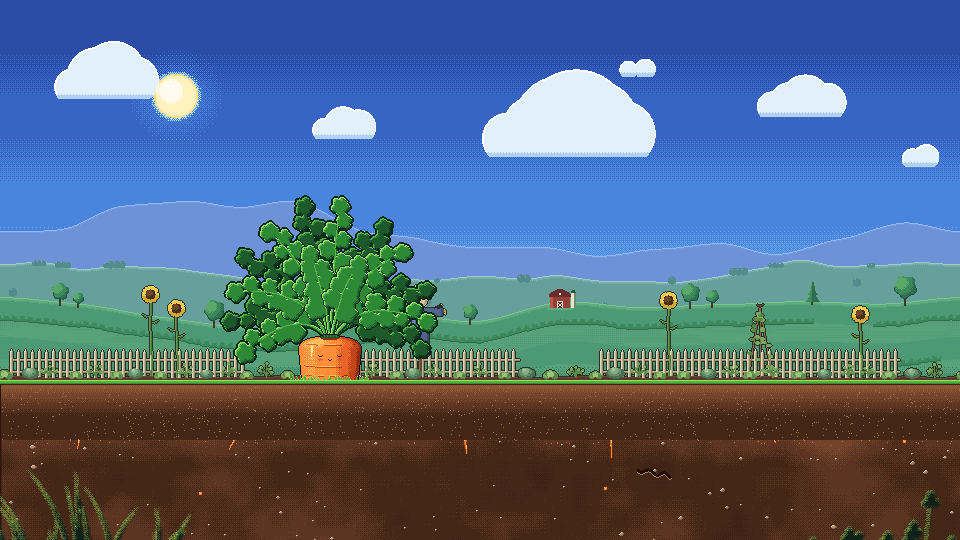
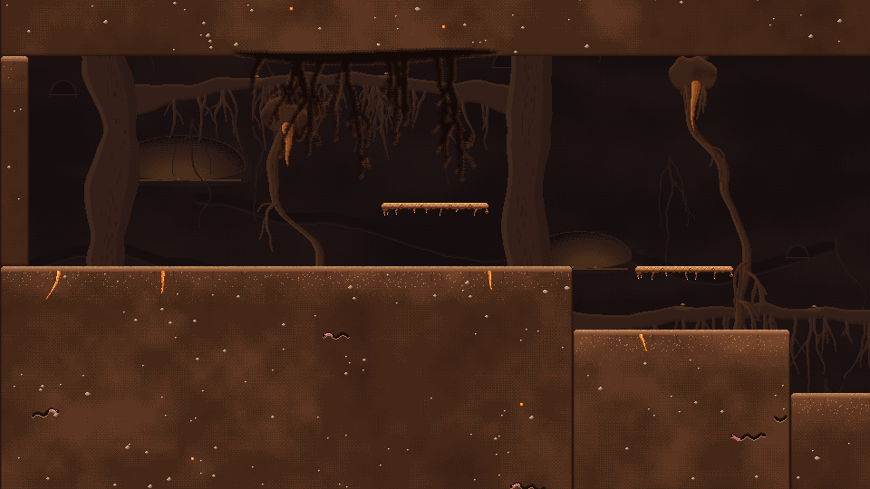

Levels
The places the game is played, and the parts they are built from.
 Title SequenceThe opening of the game, timed to its music. A star screen doubles as the lobby, a shooting star starts the song, the carrots walk to a cliff above a sea of clouds, the logo booms in, and everyone leaps.
Title SequenceThe opening of the game, timed to its music. A star screen doubles as the lobby, a shooting star starts the song, the carrots walk to a cliff above a sea of clouds, the logo booms in, and everyone leaps.
ArenaThe original one-screen fighting ground on a sunny hillside, with three wooden planks over the grass.
Garden IntroWork in progress: the game opens in a sunny vegetable garden, where the carrots walk past a giant carrot and jump down a mushroom-lined hole into the burrow.
Burrow TestA big scrolling test cave in the Warm Burrow look, built to try out the following camera, fixed camera shots and the biome parts.- Level PartsThe building blocks every level is made of, placed and tuned in the Godot 2D editor. Ground, ledges, mushrooms, doors, pedestals, torches, camera shots, spawn markers and props.